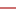

<!doctype html>
<html lang="en">
    <head>
        <meta charset="utf-8">
        <meta http-equiv="X-UA-Compatible" content="IE=edge">
        <meta name="viewport" content="initial-scale=1,user-scalable=no,maximum-scale=1,width=device-width">
        <meta name="mobile-web-app-capable" content="yes">
        <meta name="apple-mobile-web-app-capable" content="yes">
        <link rel="stylesheet" href="css/leaflet.css"><link rel="stylesheet" href="css/L.Control.Locate.min.css">
        <link rel="stylesheet" href="css/qgis2web.css"><link rel="stylesheet" href="css/fontawesome-all.min.css">
        <link rel="stylesheet" href="css/leaflet-search.css">
        <link rel="stylesheet" href="css/leaflet-measure.css">
        <style>
        html, body, #map {
            width: 100%;
            height: 100%;
            padding: 0;
            margin: 0;
        }
        </style>
        <title></title>
    </head>
    <body>
        <div id="map">
        </div>
        <script src="js/qgis2web_expressions.js"></script>
        <script src="js/leaflet.js"></script><script src="js/L.Control.Locate.min.js"></script>
        <script src="js/leaflet.rotatedMarker.js"></script>
        <script src="js/leaflet.pattern.js"></script>
        <script src="js/leaflet-hash.js"></script>
        <script src="js/Autolinker.min.js"></script>
        <script src="js/rbush.min.js"></script>
        <script src="js/labelgun.min.js"></script>
        <script src="js/labels.js"></script>
        <script src="js/leaflet-measure.js"></script>
        <script src="js/leaflet-search.js"></script>
        <script src="data/Z3Boundaryline_1.js"></script>
        <script src="data/Z3buildingpoints_2.js"></script>
        <script src="data/ave_3.js"></script>
        <script src="data/Baseline_4.js"></script>
        <script>
        var highlightLayer;
        function highlightFeature(e) {
            highlightLayer = e.target;

            if (e.target.feature.geometry.type === 'LineString') {
              highlightLayer.setStyle({
                color: '#ffff00',
              });
            } else {
              highlightLayer.setStyle({
                fillColor: '#ffff00',
                fillOpacity: 1
              });
            }
            highlightLayer.openPopup();
        }
        var map = L.map('map', {
            zoomControl:true, maxZoom:28, minZoom:1
        }).fitBounds([[26.86313259247674,89.35365257886876],[26.88706979631462,89.41001733459792]]);
        var hash = new L.Hash(map);
        map.attributionControl.setPrefix('<a href="https://github.com/tomchadwin/qgis2web" target="_blank">qgis2web</a> &middot; <a href="https://leafletjs.com" title="A JS library for interactive maps">Leaflet</a> &middot; <a href="https://qgis.org">QGIS</a>');
        var autolinker = new Autolinker({truncate: {length: 30, location: 'smart'}});
        L.control.locate({locateOptions: {maxZoom: 19}}).addTo(map);
        var measureControl = new L.Control.Measure({
            position: 'topleft',
            primaryLengthUnit: 'meters',
            secondaryLengthUnit: 'kilometers',
            primaryAreaUnit: 'sqmeters',
            secondaryAreaUnit: 'hectares'
        });
        measureControl.addTo(map);
        document.getElementsByClassName('leaflet-control-measure-toggle')[0]
        .innerHTML = '';
        document.getElementsByClassName('leaflet-control-measure-toggle')[0]
        .className += ' fas fa-ruler';
        var bounds_group = new L.featureGroup([]);
        function setBounds() {
        }
        map.createPane('pane_OpenStreetMap_0');
        map.getPane('pane_OpenStreetMap_0').style.zIndex = 400;
        var layer_OpenStreetMap_0 = L.tileLayer('https://tile.openstreetmap.org/{z}/{x}/{y}.png', {
            pane: 'pane_OpenStreetMap_0',
            opacity: 1.0,
            attribution: '',
            minZoom: 1,
            maxZoom: 28,
            minNativeZoom: 0,
            maxNativeZoom: 19
        });
        layer_OpenStreetMap_0;
        map.addLayer(layer_OpenStreetMap_0);
        function pop_Z3Boundaryline_1(feature, layer) {
            layer.on({
                mouseout: function(e) {
                    for (i in e.target._eventParents) {
                        e.target._eventParents[i].resetStyle(e.target);
                    }
                    if (typeof layer.closePopup == 'function') {
                        layer.closePopup();
                    } else {
                        layer.eachLayer(function(feature){
                            feature.closePopup()
                        });
                    }
                },
                mouseover: highlightFeature,
            });
            var popupContent = '<table>\
                    <tr>\
                        <td colspan="2">' + (feature.properties['OBJECTID'] !== null ? autolinker.link(feature.properties['OBJECTID'].toLocaleString()) : '') + '</td>\
                    </tr>\
                    <tr>\
                        <td colspan="2">' + (feature.properties['Color'] !== null ? autolinker.link(feature.properties['Color'].toLocaleString()) : '') + '</td>\
                    </tr>\
                    <tr>\
                        <td colspan="2">' + (feature.properties['LineWt'] !== null ? autolinker.link(feature.properties['LineWt'].toLocaleString()) : '') + '</td>\
                    </tr>\
                    <tr>\
                        <td colspan="2">' + (feature.properties['LAP'] !== null ? autolinker.link(feature.properties['LAP'].toLocaleString()) : '') + '</td>\
                    </tr>\
                    <tr>\
                        <td colspan="2">' + (feature.properties['LAP_no'] !== null ? autolinker.link(feature.properties['LAP_no'].toLocaleString()) : '') + '</td>\
                    </tr>\
                    <tr>\
                        <td colspan="2">' + (feature.properties['AreainHa'] !== null ? autolinker.link(feature.properties['AreainHa'].toLocaleString()) : '') + '</td>\
                    </tr>\
                    <tr>\
                        <td colspan="2">' + (feature.properties['Shape_Leng'] !== null ? autolinker.link(feature.properties['Shape_Leng'].toLocaleString()) : '') + '</td>\
                    </tr>\
                    <tr>\
                        <td colspan="2">' + (feature.properties['Shape_Area'] !== null ? autolinker.link(feature.properties['Shape_Area'].toLocaleString()) : '') + '</td>\
                    </tr>\
                    <tr>\
                        <td colspan="2">' + (feature.properties['Acres'] !== null ? autolinker.link(feature.properties['Acres'].toLocaleString()) : '') + '</td>\
                    </tr>\
                    <tr>\
                        <td colspan="2">' + (feature.properties['SqKm'] !== null ? autolinker.link(feature.properties['SqKm'].toLocaleString()) : '') + '</td>\
                    </tr>\
                </table>';
            layer.bindPopup(popupContent, {maxHeight: 400});
        }

        function style_Z3Boundaryline_1_0() {
            return {
                pane: 'pane_Z3Boundaryline_1',
                opacity: 1,
                color: 'rgba(227,26,28,1.0)',
                dashArray: '',
                lineCap: 'square',
                lineJoin: 'bevel',
                weight: 3.0,
                fillOpacity: 0,
                interactive: false,
            }
        }
        map.createPane('pane_Z3Boundaryline_1');
        map.getPane('pane_Z3Boundaryline_1').style.zIndex = 401;
        map.getPane('pane_Z3Boundaryline_1').style['mix-blend-mode'] = 'normal';
        var layer_Z3Boundaryline_1 = new L.geoJson(json_Z3Boundaryline_1, {
            attribution: '',
            interactive: false,
            dataVar: 'json_Z3Boundaryline_1',
            layerName: 'layer_Z3Boundaryline_1',
            pane: 'pane_Z3Boundaryline_1',
            onEachFeature: pop_Z3Boundaryline_1,
            style: style_Z3Boundaryline_1_0,
        });
        bounds_group.addLayer(layer_Z3Boundaryline_1);
        map.addLayer(layer_Z3Boundaryline_1);
        function pop_Z3buildingpoints_2(feature, layer) {
            layer.on({
                mouseout: function(e) {
                    for (i in e.target._eventParents) {
                        e.target._eventParents[i].resetStyle(e.target);
                    }
                    if (typeof layer.closePopup == 'function') {
                        layer.closePopup();
                    } else {
                        layer.eachLayer(function(feature){
                            feature.closePopup()
                        });
                    }
                },
                mouseover: highlightFeature,
            });
            var popupContent = '<table>\
                    <tr>\
                        <td colspan="2">' + (feature.properties['build no'] !== null ? autolinker.link(feature.properties['build no'].toLocaleString()) : '') + '</td>\
                    </tr>\
                    <tr>\
                        <td colspan="2">' + (feature.properties['build alph'] !== null ? autolinker.link(feature.properties['build alph'].toLocaleString()) : '') + '</td>\
                    </tr>\
                    <tr>\
                        <td colspan="2">' + (feature.properties['street typ'] !== null ? autolinker.link(feature.properties['street typ'].toLocaleString()) : '') + '</td>\
                    </tr>\
                    <tr>\
                        <td colspan="2">' + (feature.properties['street no'] !== null ? autolinker.link(feature.properties['street no'].toLocaleString()) : '') + '</td>\
                    </tr>\
                    <tr>\
                        <td colspan="2">' + (feature.properties['latitude'] !== null ? autolinker.link(feature.properties['latitude'].toLocaleString()) : '') + '</td>\
                    </tr>\
                    <tr>\
                        <td colspan="2">' + (feature.properties['longitude'] !== null ? autolinker.link(feature.properties['longitude'].toLocaleString()) : '') + '</td>\
                    </tr>\
                    <tr>\
                        <th scope="row">quadrant</th>\
                        <td>' + (feature.properties['quadrant'] !== null ? autolinker.link(feature.properties['quadrant'].toLocaleString()) : '') + '</td>\
                    </tr>\
                    <tr>\
                        <th scope="row">zone</th>\
                        <td>' + (feature.properties['zone'] !== null ? autolinker.link(feature.properties['zone'].toLocaleString()) : '') + '</td>\
                    </tr>\
                    <tr>\
                        <th scope="row">building code</th>\
                        <td>' + (feature.properties['building code'] !== null ? autolinker.link(feature.properties['building code'].toLocaleString()) : '') + '</td>\
                    </tr>\
                    <tr>\
                        <th scope="row">street code</th>\
                        <td>' + (feature.properties['street code'] !== null ? autolinker.link(feature.properties['street code'].toLocaleString()) : '') + '</td>\
                    </tr>\
                    <tr>\
                        <th scope="row">Address</th>\
                        <td>' + (feature.properties['Address'] !== null ? autolinker.link(feature.properties['Address'].toLocaleString()) : '') + '</td>\
                    </tr>\
                </table>';
            layer.bindPopup(popupContent, {maxHeight: 400});
        }

        function style_Z3buildingpoints_2_0() {
            return {
                pane: 'pane_Z3buildingpoints_2',
                radius: 4.0,
                opacity: 1,
                color: 'rgba(35,35,35,1.0)',
                dashArray: '',
                lineCap: 'butt',
                lineJoin: 'miter',
                weight: 1,
                fill: true,
                fillOpacity: 1,
                fillColor: 'rgba(196,60,57,1.0)',
                interactive: true,
            }
        }
        map.createPane('pane_Z3buildingpoints_2');
        map.getPane('pane_Z3buildingpoints_2').style.zIndex = 402;
        map.getPane('pane_Z3buildingpoints_2').style['mix-blend-mode'] = 'normal';
        var layer_Z3buildingpoints_2 = new L.geoJson(json_Z3buildingpoints_2, {
            attribution: '',
            interactive: true,
            dataVar: 'json_Z3buildingpoints_2',
            layerName: 'layer_Z3buildingpoints_2',
            pane: 'pane_Z3buildingpoints_2',
            onEachFeature: pop_Z3buildingpoints_2,
            pointToLayer: function (feature, latlng) {
                var context = {
                    feature: feature,
                    variables: {}
                };
                return L.circleMarker(latlng, style_Z3buildingpoints_2_0(feature));
            },
        });
        bounds_group.addLayer(layer_Z3buildingpoints_2);
        map.addLayer(layer_Z3buildingpoints_2);
        function pop_ave_3(feature, layer) {
            layer.on({
                mouseout: function(e) {
                    for (i in e.target._eventParents) {
                        e.target._eventParents[i].resetStyle(e.target);
                    }
                    if (typeof layer.closePopup == 'function') {
                        layer.closePopup();
                    } else {
                        layer.eachLayer(function(feature){
                            feature.closePopup()
                        });
                    }
                },
                mouseover: highlightFeature,
            });
            var popupContent = '<table>\
                    <tr>\
                        <td colspan="2">' + (feature.properties['type'] !== null ? autolinker.link(feature.properties['type'].toLocaleString()) : '') + '</td>\
                    </tr>\
                    <tr>\
                        <td colspan="2">' + (feature.properties['no'] !== null ? autolinker.link(feature.properties['no'].toLocaleString()) : '') + '</td>\
                    </tr>\
                    <tr>\
                        <th scope="row">name</th>\
                        <td>' + (feature.properties['name'] !== null ? autolinker.link(feature.properties['name'].toLocaleString()) : '') + '</td>\
                    </tr>\
                </table>';
            layer.bindPopup(popupContent, {maxHeight: 400});
        }

        function style_ave_3_0() {
            return {
                pane: 'pane_ave_3',
                opacity: 1,
                color: 'rgba(198,92,92,1.0)',
                dashArray: '',
                lineCap: 'square',
                lineJoin: 'bevel',
                weight: 2.0,
                fillOpacity: 0,
                interactive: true,
            }
        }
        map.createPane('pane_ave_3');
        map.getPane('pane_ave_3').style.zIndex = 403;
        map.getPane('pane_ave_3').style['mix-blend-mode'] = 'normal';
        var layer_ave_3 = new L.geoJson(json_ave_3, {
            attribution: '',
            interactive: true,
            dataVar: 'json_ave_3',
            layerName: 'layer_ave_3',
            pane: 'pane_ave_3',
            onEachFeature: pop_ave_3,
            style: style_ave_3_0,
        });
        bounds_group.addLayer(layer_ave_3);
        map.addLayer(layer_ave_3);
        function pop_Baseline_4(feature, layer) {
            layer.on({
                mouseout: function(e) {
                    for (i in e.target._eventParents) {
                        e.target._eventParents[i].resetStyle(e.target);
                    }
                    if (typeof layer.closePopup == 'function') {
                        layer.closePopup();
                    } else {
                        layer.eachLayer(function(feature){
                            feature.closePopup()
                        });
                    }
                },
                mouseover: highlightFeature,
            });
            var popupContent = '<table>\
                    <tr>\
                        <td colspan="2">' + (feature.properties['type'] !== null ? autolinker.link(feature.properties['type'].toLocaleString()) : '') + '</td>\
                    </tr>\
                    <tr>\
                        <td colspan="2">' + (feature.properties['no'] !== null ? autolinker.link(feature.properties['no'].toLocaleString()) : '') + '</td>\
                    </tr>\
                    <tr>\
                        <th scope="row">nabaseline</th>\
                        <td>' + (feature.properties['nabaseline'] !== null ? autolinker.link(feature.properties['nabaseline'].toLocaleString()) : '') + '</td>\
                    </tr>\
                </table>';
            layer.bindPopup(popupContent, {maxHeight: 400});
        }

        function style_Baseline_4_0() {
            return {
                pane: 'pane_Baseline_4',
                opacity: 1,
                color: 'rgba(51,160,44,1.0)',
                dashArray: '',
                lineCap: 'square',
                lineJoin: 'bevel',
                weight: 2.0,
                fillOpacity: 0,
                interactive: true,
            }
        }
        map.createPane('pane_Baseline_4');
        map.getPane('pane_Baseline_4').style.zIndex = 404;
        map.getPane('pane_Baseline_4').style['mix-blend-mode'] = 'normal';
        var layer_Baseline_4 = new L.geoJson(json_Baseline_4, {
            attribution: '',
            interactive: true,
            dataVar: 'json_Baseline_4',
            layerName: 'layer_Baseline_4',
            pane: 'pane_Baseline_4',
            onEachFeature: pop_Baseline_4,
            style: style_Baseline_4_0,
        });
        bounds_group.addLayer(layer_Baseline_4);
        map.addLayer(layer_Baseline_4);
        var baseMaps = {};
        L.control.layers(baseMaps,{' Baseline': layer_Baseline_4,' ave': layer_ave_3,' Z3 building points': layer_Z3buildingpoints_2,' Z3 Boundary line': layer_Z3Boundaryline_1,"OpenStreetMap": layer_OpenStreetMap_0,},{collapsed:false}).addTo(map);
        setBounds();
        var i = 0;
        layer_ave_3.eachLayer(function(layer) {
            var context = {
                feature: layer.feature,
                variables: {}
            };
            layer.bindTooltip((layer.feature.properties['name'] !== null?String('<div style="color: #323232; font-size: 10pt; font-family: \'Arial Black\', sans-serif;">' + layer.feature.properties['name']) + '</div>':''), {permanent: true, offset: [-0, -16], className: 'css_ave_3'});
            labels.push(layer);
            totalMarkers += 1;
              layer.added = true;
              addLabel(layer, i);
              i++;
        });
        var i = 0;
        layer_Baseline_4.eachLayer(function(layer) {
            var context = {
                feature: layer.feature,
                variables: {}
            };
            layer.bindTooltip((layer.feature.properties['type'] !== null?String('<div style="color: #323232; font-size: 10pt; font-family: \'Arial Black\', sans-serif;">' + layer.feature.properties['type']) + '</div>':''), {permanent: true, offset: [-0, -16], className: 'css_Baseline_4'});
            labels.push(layer);
            totalMarkers += 1;
              layer.added = true;
              addLabel(layer, i);
              i++;
        });
        map.addControl(new L.Control.Search({
            layer: layer_Z3buildingpoints_2,
            initial: false,
            hideMarkerOnCollapse: true,
            propertyName: 'Address'}));
        document.getElementsByClassName('search-button')[0].className +=
         ' fa fa-binoculars';
        resetLabels([layer_ave_3,layer_Baseline_4]);
        map.on("zoomend", function(){
            resetLabels([layer_ave_3,layer_Baseline_4]);
        });
        map.on("layeradd", function(){
            resetLabels([layer_ave_3,layer_Baseline_4]);
        });
        map.on("layerremove", function(){
            resetLabels([layer_ave_3,layer_Baseline_4]);
        });
        </script>
    </body>
</html>
